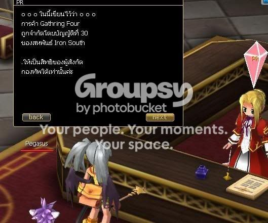
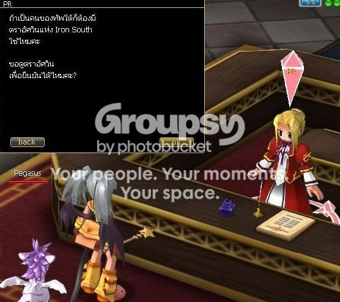
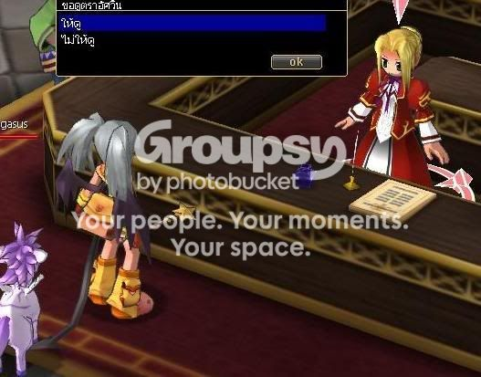
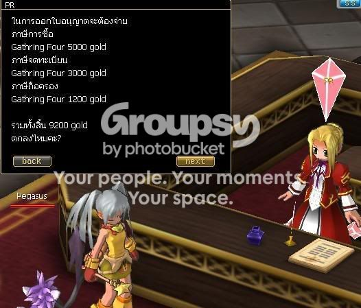
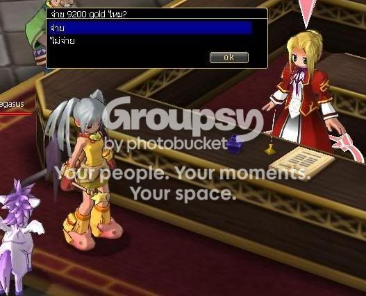
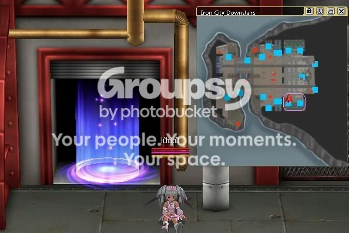
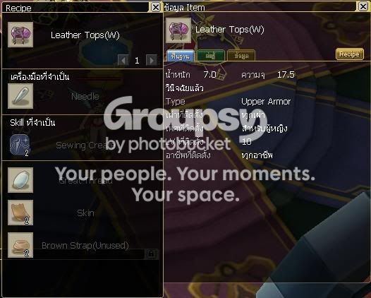
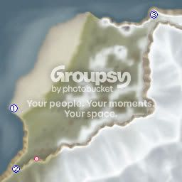
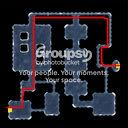
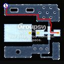

พวกชุดอาวุธ lv 45 หาซื้อได้จากที่ไหนครับ?
ขอบคุณครับ
คำถามปลีกย่อยขอให้มาตั้งในกระทู้นี้คะ ตอบวันต่อวันคะ
 โดย ECO » อังคาร 28 ส.ค. 2007 10:28 pm
โดย ECO » อังคาร 28 ส.ค. 2007 10:28 pm
ถาม2ข้อฮะ
1.เควสทำลายอาวุธอ่ะฮะชาวนาทำไม่ได้เหรอฮะ
หรือถ้าได้ขอขั้นตอนหน่อยฮธลองไปแล้วตาลุงบอกว่าไม่มีความอดทนซะงั้น
2.เราไปคุยก่ะผู้หญิงข้างลุงเควสข้างบนอ่ะ(จำชื่อมะได้)เขาถามเรื่องบัตร Gathering Trading Chaterอ่ะฮะมันเอาไปทำไรฮะ?
1.เควสทำลายอาวุธอ่ะฮะชาวนาทำไม่ได้เหรอฮะ
หรือถ้าได้ขอขั้นตอนหน่อยฮธลองไปแล้วตาลุงบอกว่าไม่มีความอดทนซะงั้น
2.เราไปคุยก่ะผู้หญิงข้างลุงเควสข้างบนอ่ะ(จำชื่อมะได้)เขาถามเรื่องบัตร Gathering Trading Chaterอ่ะฮะมันเอาไปทำไรฮะ?
- ECO
- Dark Warrior

- โพสต์: 276285
- ลงทะเบียนเมื่อ: พุธ 26 ต.ค. 2011 9:31 pm
 โดย ECO » พุธ 29 ส.ค. 2007 9:40 am
โดย ECO » พุธ 29 ส.ค. 2007 9:40 am
rockpigs เขียน::Dตีบวกไม่ได้คับ มันขึ้นว่าไม่มีitemที่เป็นวัตถุดิบทั้งที่มีlife crystal ในตัวนะคับ ช่วยบอกที
:oops: ไม่ทราบว่าคุณได้ถอด Item ที่จะนำมาตีบวก
ออกจากช่องใส่ชุดของตัวละครหรือยังคะ
:arrow: ต้องถอด Item ออกมาไว้ในช่อง Inventory ก่อนค่ะ
จึงจะสามารถนำมาเป็นวัตถุดิบในการตีบวกได้
(ไม่ได้หมายความว่าคุณไม่มี Crystal ค่ะ)
นายลูกแพร เขียน:ถามฮะ
1.เควสทำอาวุธให้พังเลเวล45นี่ชาวนาทำไม่ได้เหรอฮะตาลุงไม่ยอมให้อาวุธมา
เราจะเอาขวาน2มืออ่ะ
:oops: เนื้อเรื่องของเควสนี้
เกี่ยวกับความอดทนของนักรบต่างๆ (สาย Fighter , สาย Spell User)
จึงทำให้สาย Back Packer ไม่มีส่วนร่วมในเควสนี้ค่ะ
นายลูกแพร เขียน:2.เราไปคุยก่ะผู้หญิงข้างลุงเควสข้างบนอ่ะ(จำชื่อมะได้)เขาถามเรื่องบัตร Gathering Trading Chaterอ่ะฮะมันเอาไปทำไรฮะ?
:oops: NPC : PR เค้าขายใบอนุญาต Gathering Trading Chater สำหรับนำไปซื้อปืนค่ะ
ผู้ที่จะซื้อได้ต้องสังกัดกองกำลังทหารฝ่ายใต้ก่อนค่ะ (ดังภาพ)











:oops: Gathering Trading Chater คือใบอนุญาตขอซื้อปืนค่ะ
นำใบอนุญาตนี้ไปซื้อปืน Gathring Gun
ได้ที่ NPC : Mill's PR ที่เมือง Iron City Downstairs ค่ะ (ดังภาพ)



- ECO
- Dark Warrior
- โพสต์: 276285
- ลงทะเบียนเมื่อ: พุธ 26 ต.ค. 2011 9:31 pm
 โดย ECO » พฤหัสฯ. 30 ส.ค. 2007 8:18 am
โดย ECO » พฤหัสฯ. 30 ส.ค. 2007 8:18 am
mmmnarak เขียน:ทำไมพอกดใช้ Golem แล้วมันขึ้นว่า
ไม่สามารถใช้ได้ในระหว่าง Event
ยังไม่รุ้เลยว่าไปทำ Event อะไร ตอนไหน - -
บอกทีต้องทำไงอ่า ?
ช่วยยกตัวอย่าง Event ด้วยนะคะ
:oops: แนะนำให้นำ Golem Marionette ตัวนั้นไปใส่คลังไว้นะคะ
แล้วให้ตัวละครอื่นในไอดีเอาออกมาจากคลัง (เดินเล่นสักระยะ)
และนำกลับไปเก็บไว้ในคลังอีกครั้งหนึ่ง
:arrow: ทีนี้ให้ตัวละครหลักนำ Golem Marionette ออกมาจากคลัง
แล้วจะสามารถใช้งานได้ตามปกติค่ะ
- ECO
- Dark Warrior
- โพสต์: 276285
- ลงทะเบียนเมื่อ: พุธ 26 ต.ค. 2011 9:31 pm
*~`•U n d i n e•`~*
 โดย ECO » พฤหัสฯ. 30 ส.ค. 2007 8:58 am
โดย ECO » พฤหัสฯ. 30 ส.ค. 2007 8:58 am
ขอ1คำภามจร้า
ไม่ทราวว่า หูแมวของชาแมน(?) เเล้วก็หูแมวทีใส่ใด้ทุกอาชีพ ทำยังไงเหรอค่ะหรือว่าต้องเปิดกล่องเอา
ขอบคุงค่ะ :idea:
ไม่ทราวว่า หูแมวของชาแมน(?) เเล้วก็หูแมวทีใส่ใด้ทุกอาชีพ ทำยังไงเหรอค่ะหรือว่าต้องเปิดกล่องเอา
ขอบคุงค่ะ :idea:
- ECO
- Dark Warrior
- โพสต์: 276285
- ลงทะเบียนเมื่อ: พุธ 26 ต.ค. 2011 9:31 pm
 โดย ECO » พฤหัสฯ. 30 ส.ค. 2007 10:51 am
โดย ECO » พฤหัสฯ. 30 ส.ค. 2007 10:51 am
oseris เขียน:Learther Tops เกาะอกม่วงนี้มันหาได้จากไหนหรือ
:oops: วิธีทำ Learther Tops (ดังภาพค่ะ)


*~`•ARIA COMPANY•`~* เขียน:ขอ1คำภามจร้า
ไม่ทราวว่า หูแมวของชาแมน(?) เเล้วก็หูแมวทีใส่ใด้ทุกอาชีพ ทำยังไงเหรอค่ะหรือว่าต้องเปิดกล่องเอา
ขอบคุงค่ะ
:oops: หมวกของชาแมนได้จากกล่อง Container Box 5 ค่ะ
[GM]เป๊ปเป้ เขียน: :oops: Neko Hairband Lv.35 ได้จากกล่องดังต่อไปนี้ค่ะ
>> Wood Box 6,7,8
>> Treasure Box 1,8,9,13
>> Container Box 4,5
:oops: Wolf Ear Lv.45 ได้จากกล่องดังต่อไปนี้ค่ะ
>> Treasure Box 9
:arrow: และดรอปจาก Meiou ค่ะ
( แต่ถ้ามีสกิล Animal Knowledge ด้วยยิ่งดีค่ะ เพราะจะทำให้มีโอกาสดรอปมากขึ้น :wink: )
- ECO
- Dark Warrior
- โพสต์: 276285
- ลงทะเบียนเมื่อ: พุธ 26 ต.ค. 2011 9:31 pm
 โดย ECO » พฤหัสฯ. 30 ส.ค. 2007 11:19 am
โดย ECO » พฤหัสฯ. 30 ส.ค. 2007 11:19 am
ถามสั้นครับ
ผสม booster เผ่า dominion ที่ไหนคับ (ต้องทำเควสป่ะครับ)
ของครบแล้ว
ตอนนี้ไม่อยู่บ้าน เพื่อนโทรมาบอกว่าดรอปได้แล้ว เดี๋ยวกลับไปเอาได้เลย
ขี้เกียจหา + ลองหาไป 2-3 คำแล้วไม่เจอ
ไม่อยากตั้งกระทู้ใหม่ รก !
ปล. ยังไม่ได้ลองใดๆทั้งสิ้น (เพราะยังไม่อยู่บ้านนั่นแหละ) อาจทำง่ายๆก็อย่าว่าโง่นะครับ เพราะยังไม่ได้ลองอะไรเลย
ผสม booster เผ่า dominion ที่ไหนคับ (ต้องทำเควสป่ะครับ)
ของครบแล้ว
ตอนนี้ไม่อยู่บ้าน เพื่อนโทรมาบอกว่าดรอปได้แล้ว เดี๋ยวกลับไปเอาได้เลย
ขี้เกียจหา + ลองหาไป 2-3 คำแล้วไม่เจอ
ไม่อยากตั้งกระทู้ใหม่ รก !
ปล. ยังไม่ได้ลองใดๆทั้งสิ้น (เพราะยังไม่อยู่บ้านนั่นแหละ) อาจทำง่ายๆก็อย่าว่าโง่นะครับ เพราะยังไม่ได้ลองอะไรเลย
- ECO
- Dark Warrior
- โพสต์: 276285
- ลงทะเบียนเมื่อ: พุธ 26 ต.ค. 2011 9:31 pm
 โดย ECO » พฤหัสฯ. 30 ส.ค. 2007 11:12 pm
โดย ECO » พฤหัสฯ. 30 ส.ค. 2007 11:12 pm
Shiro เขียน:คือชุดเมดหาซื้อจากไหนหรอครับ
พอดีอยากไห้ตัวแฟนใส่อ่ะ!!! :twisted:
ปล.แล้วใส่ได้ตอนเวลไรหรอครับ
ไปซื้อได้ที่นี่ค่ะ


ตรงจุดแดง ๆ ขึ้นไปชั้น 3 ราคา 2100G แนะนำว่าถ้ายังเลเวลยังต่ำอยู่ ก็หาคนเวลสูงหน่อยสิงไปซื้อนะคะ มันโหดเหมือนกัน ^^" ถ้าสูงแล้วก็ลุยเลยค่ะ สบายมาก
ใส่ได้ตอนเลเวล 1 ค่ะ
ลูทวิ่งค่ะ
B1
 B2
B2 

B3

NPC ขายของจะอยูที่หมายเลข 1 ^^
- ECO
- Dark Warrior
- โพสต์: 276285
- ลงทะเบียนเมื่อ: พุธ 26 ต.ค. 2011 9:31 pm
 โดย ECO » ศุกร์ 31 ส.ค. 2007 3:20 am
โดย ECO » ศุกร์ 31 ส.ค. 2007 3:20 am
รบกวนช่วยตอบทีนะคะ
1. golem ตั้งร้านขายของ เปิดทิ้งไว้ได้แค่ 24 ชม.เท่านั้นหรอคะ เราเอาอีกไอดีมาคอยเช็คดู พอเลยเวลาที่เราตั้งร้านเมื่อวานทีไร จะหาไม่เจอแล้วทุกที แต่เคยอ่านในกระทู้อื่น เห็นมีคนตอบว่าตั้งทั้งวันทั้งคืนจนกว่าเราจะล็อคอินเข้าเกม (ไม่นับวันมีpatch) เลยอยากรู้ว่าโกเล็มของเราบั้กหรือเปล่า แต่เราลองตั้งดูทั้ง 2 ไอดีก็เป็นเหมือนกันนะคะ ครบ24ชม.แล้วจะหายไป
2. เควสรับรองเท้า/หมวกของชาวนาlv.35/55 ที่รับกับบาร์เทนเดอร์สาวในร้านเหล้าเมืองใต้ ให้หาอาหาร22รายการ ขาด matsu takesama(หรือ matsutake sama) อย่างเดียวที่หาไม่ได้เลย อยากรู้ว่าเพราะชื่อไม่ตรง หรือของยังไม่มีใน sage นี้คะ ถ้าเปิดจากกล่องหรือตีเห็ดพิษได้ก็น่าจะมีคนเคยได้เอามาบอก หรือเห็นขายตามร้านบ้าง แต่เรายังไม่เคยเห็นเลย หรืออาจจะดูยังไม่ทั่วก็ไม่รู้ ข้อนี้รบกวน gm หรือใครก็ได้ที่ทราบมาช่วยตอบทีนะคะ
ขอบคุณล่วงหน้าค่า
1. golem ตั้งร้านขายของ เปิดทิ้งไว้ได้แค่ 24 ชม.เท่านั้นหรอคะ เราเอาอีกไอดีมาคอยเช็คดู พอเลยเวลาที่เราตั้งร้านเมื่อวานทีไร จะหาไม่เจอแล้วทุกที แต่เคยอ่านในกระทู้อื่น เห็นมีคนตอบว่าตั้งทั้งวันทั้งคืนจนกว่าเราจะล็อคอินเข้าเกม (ไม่นับวันมีpatch) เลยอยากรู้ว่าโกเล็มของเราบั้กหรือเปล่า แต่เราลองตั้งดูทั้ง 2 ไอดีก็เป็นเหมือนกันนะคะ ครบ24ชม.แล้วจะหายไป
2. เควสรับรองเท้า/หมวกของชาวนาlv.35/55 ที่รับกับบาร์เทนเดอร์สาวในร้านเหล้าเมืองใต้ ให้หาอาหาร22รายการ ขาด matsu takesama(หรือ matsutake sama) อย่างเดียวที่หาไม่ได้เลย อยากรู้ว่าเพราะชื่อไม่ตรง หรือของยังไม่มีใน sage นี้คะ ถ้าเปิดจากกล่องหรือตีเห็ดพิษได้ก็น่าจะมีคนเคยได้เอามาบอก หรือเห็นขายตามร้านบ้าง แต่เรายังไม่เคยเห็นเลย หรืออาจจะดูยังไม่ทั่วก็ไม่รู้ ข้อนี้รบกวน gm หรือใครก็ได้ที่ทราบมาช่วยตอบทีนะคะ
ขอบคุณล่วงหน้าค่า
- ECO
- Dark Warrior
- โพสต์: 276285
- ลงทะเบียนเมื่อ: พุธ 26 ต.ค. 2011 9:31 pm
*~`•U n d i n e•`~*
 โดย ECO » ศุกร์ 31 ส.ค. 2007 8:47 am
โดย ECO » ศุกร์ 31 ส.ค. 2007 8:47 am
ขออีก1คำถาม
ไม่ทราบว่า เจ้าMeiou อยู่ทีไหนเหรอค่ะ หรือว่ายังไม่มา
ท่ามีรูป ก็ขอดูหน้าตาหนอยค่ะ
ขอบคุณค่ะ
ไม่ทราบว่า เจ้าMeiou อยู่ทีไหนเหรอค่ะ หรือว่ายังไม่มา
ท่ามีรูป ก็ขอดูหน้าตาหนอยค่ะ
ขอบคุณค่ะ
- ECO
- Dark Warrior
- โพสต์: 276285
- ลงทะเบียนเมื่อ: พุธ 26 ต.ค. 2011 9:31 pm
ผู้ใช้งานขณะนี้
่กำลังดูบอร์ดนี้: ไม่มีสมาชิก และ บุคคลทั่วไป 1 ท่าน